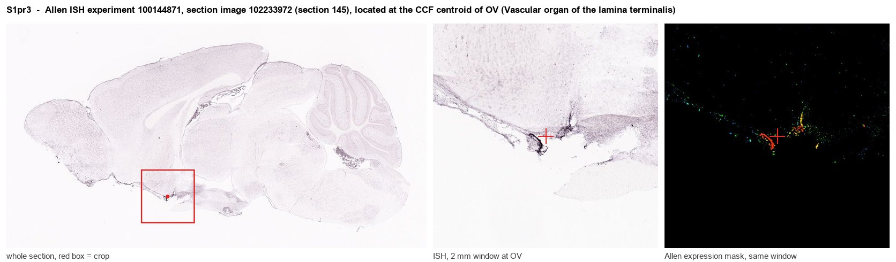
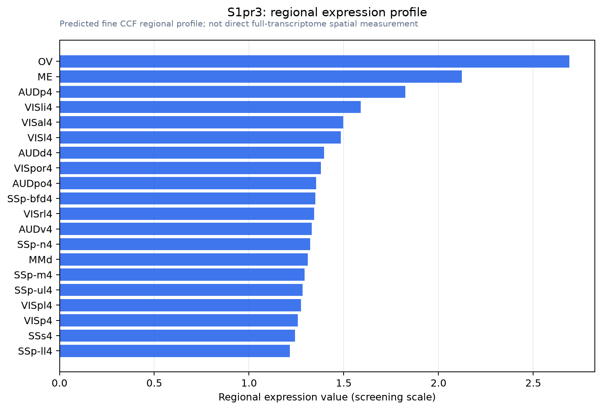

S1pr3
Sphingosine 1-phosphate receptor 3 (S1P receptor 3) (S1P3) (Endothelial differentiation G protein-coupled receptor 3) (Lysophospholipid receptor B3) (Sphingosine 1-phosphate receptor Edg-3) (S1P recep
Spatial tier: REGION_BIASED · Class: GPCR · Top region: OV (Vascular organ of the lamina terminalis) · Positive regions: 29/554
Function in OV: evidence, prediction, innovation
- Gene function
- S1PR3 is one of five G protein-coupled receptors for the bioactive lipid sphingosine-1-phosphate, coupling promiscuously to Gq, Gi and G12/13. It controls vascular permeability, endothelial and pericyte behaviour, immune-cell trafficking and, in neurons, excitability; S1P receptors are the target of fingolimod-class drugs.
- Region function
- The vascular organ of the lamina terminalis (OVLT) is a sensory circumventricular organ lacking a blood-brain barrier; its glutamatergic osmosensitive neurons detect plasma hypertonicity and drive thirst, vasopressin release and sympathetic/thermoregulatory responses through the SFO-MnPO-PVN network.
- Published in this region
- inferred No region-specific literature found. The nearest CNS findings are that S1PR3 in medial prefrontal cortex supports sociability and anxiolytic-like gene programmes (Castro-Vildosola 2025), that S1PR3 drives blood-brain-barrier opening via CCL2-CCR2 after haemorrhage (Xu 2021), and that S1P directly excites sensory neurons through S1PR3 (Patil 2019).
- Predicted function
- Prediction: the OVLT is one of the few brain sites where blood-borne S1P reaches neural tissue directly, so S1PR3 there is well placed to let circulating lipid and inflammatory signals modulate osmosensation and barrier tone. Gq coupling would depolarise OVLT glutamatergic neurons, adding a sickness/inflammation input onto thirst. Local S1PR3 agonism should increase drinking or vasopressin release, and S1pr3 knockout or the antagonist TY-52156 should blunt fever- and inflammation-associated changes in fluid intake while leaving basal osmotic thirst intact.
- Innovation
- ★★★★☆ 4/5 S1P signalling at a barrier-free sensory organ is an obvious immune-to-thirst interface that has not been examined.
- Tools
- Antagonist TY-52156, agonist CYM-5541; S1pr3 knockout and S1pr3-GFP reporter mice; fingolimod (non-selective); OVLT-targeted AAV with Slc17a6-Cre.
- References
Direct evidence located at the region

Allen ISH experiment 100144871, section image 102233972 (section 145): the section that contains the CCF centroid of Vascular organ of the lamina terminalis according to the Allen image-to-atlas alignment (reference_to_image), with a 2 mm window around that point. Left: whole section, red box = window. Middle: ISH signal. Right: Allen's expression-mask view of the same window. open this image in the Allen viewer
Direct spatial evidence

Regional expression figure

Predicted WMB × fine-CCF profile; not direct full-transcriptome spatial measurement.
Spatial profile
Evidence and specificity
- Evidence status
- PREDICTED_FINE
- Direct sources
- None; predicted localization only
- Exclusive threshold
- 12 positive regions out of 554
- Spatial specificity
- 0.308
- Top-region fraction
- 0.060
- Filter status
- PASS
Interpretation limits
- Cell-type-to-region projection is imputed expression, not direct spatial measurement.
- Adult reference atlases do not establish stability across age, sex, strain, state, or disease.
- Transcript abundance does not guarantee protein abundance or genetic-tool performance.